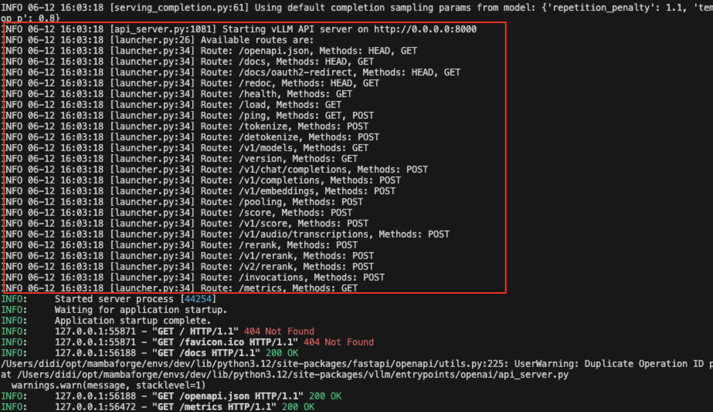

VLLM 是当前非常流行的一个 LLM 服务和推理框架，我们将开启一个系列，详细学习 VLLM 框架。
这是该系列的第一篇文章，我们先介绍 VLLM 是如何启动一个模型，并提供 HTTP 接口服务的。
VLLM 模型服务
根据 VLLM 官方文档 介绍，我们可以使用如下命令启动一个兼容 OpenAI 接口的 HTTP 模型服务：
vllm serve Qwen/Qwen2.5-0.5B-Instruct我们可以这样来理解这条命令：
- 首先，我们使用了 vllm 这个命令，这是我们在安装 vllm 包的时候，由 vllm 的安装脚本添加到我们 Python 虚拟环境中的命令。这一般在安装包的 setup.py 或 pyproject.toml 文件中指定。
VLLM 是在 pyproject.toml 中指定的，如下：
[project.scripts]
vllm = "vllm.entrypoints.cli.main:main"- serve 是一个子命令，用于启动一个模型服务。 vllm 提供了多个不同功能的子命令，如 serve、chat、complete、bench 等。这可以通过
vllm --help命令查看，也可以通过阅读分析vllm.entrypoints.cli.main代码找到。
`vllm --help` 输出的帮助信息如下：
usage: vllm [-h] [-v] {chat,complete,serve,bench} ...
vLLM CLI
positional arguments:
{chat,complete,serve,bench}
chat Generate chat completions via the running API server
complete Generate text completions based on the given prompt via the running API server
serve Start the vLLM OpenAI Compatible API server
bench vLLM bench subcommand.
options:
-h, --help show this help message and exit
-v, --version show program's version number and exit
Qwen/Qwen2.5-0.5B-Instruct是本次服务的模型，这是一个 0.5B 的小尺寸模型，大家的普通电脑设备都可以跑这个模型。这里给的是一个模型名称（而不是模型路径），因此它会去 huggingface 上下载这个模型，这个过程比较耗时。如果已经下载过模型，则可以直接使用模型的完整路径启动服务。
当我们看到类似如下的信息后，表明模型服务启动完成，我们可以访问 localhost:8000/docs 端口查看模型提供的接口及其相关文档。
模型服务启动成功日志如下：

我们在启动模型时没有特殊设置模型名称，因此 chat 等模型服务接口的 model 参数与模型名称保持一致即可（上述示例中为 Qwen/Qwen2.5-0.5B-Instruct）；我们也可以调用 models 接口查看当前提供服务的模型信息，如下：~
curl http://localhost:8000/v1/models`curl http://localhost:8000/v1/models` 输出结果如下：
{
"object": "list",
"data": [
{
"id": "Qwen/Qwen2.5-0.5B-Instruct",
"object": "model",
"created": 1749717234,
"owned_by": "vllm",
"root": "Qwen/Qwen2.5-0.5B-Instruct",
"parent": null,
"max_model_len": 32768,
"permission": [
{
"id": "modelperm-b2c923266dea46239192c5ab91652978",
"object": "model_permission",
"created": 1749717234,
"allow_create_engine": false,
"allow_sampling": true,
"allow_logprobs": true,
"allow_search_indices": false,
"allow_view": true,
"allow_fine_tuning": false,
"organization": "*",
"group": null,
"is_blocking": false
}
]
}
]
}